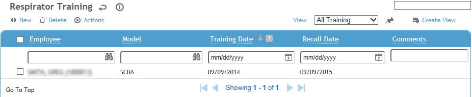
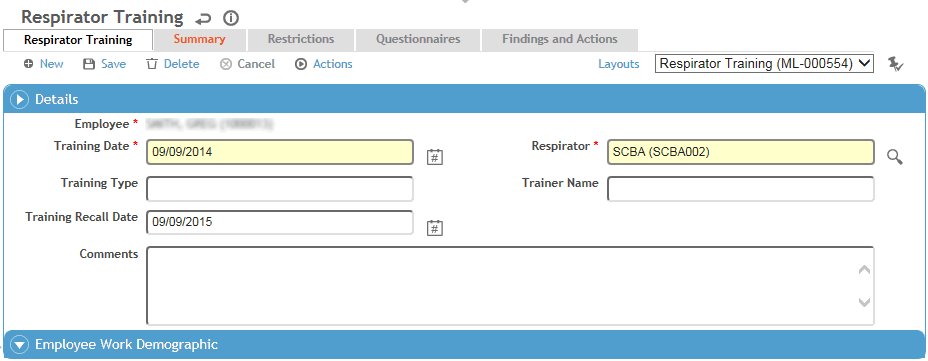
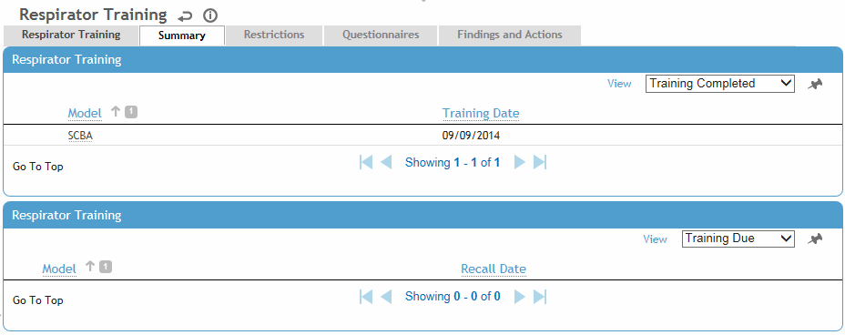

The Respirator Training module lists respirator models that an employee has been trained to use, the training dates, and recall dates for retraining.
In the Training menu click Respirator Training and use the search list to select an employee.

Click a link to edit, or click New.

On the Respirator Training tab, enter or update information about the training. Cority automatically calculates the recall date as one year from the initial training date, but if necessary you can enter a different date.
Click Save.
The Summary tab displays the respirators on which the employee has completed training, and the respirators on which the employee is due for training. Models are listed as due for training if the recall date for training has passed without the employee having undergone the appropriate procedure. The summary is based on all respirator training records for the employee.

The Restrictions tab displays all work restrictions recorded for this employee in the Demographic, Medical Chart, Clinic Visits, Case Management, Pulmonary, and Respirator Fit modules. For information about entering a work restriction, see Recording Work Restrictions.
To quickly end all listed restrictions, choose Actions»End All Active Restrictions.
The Questionnaires tab allows you to associate questionnaires with a record. For information about creating and administering questionnaires, see Questionnaires.
The Findings and Actions tab displays all findings and actions recommended (or required) as a result of this training.
For information about recording a finding and its actions, see Recording a New Finding.
To view an action’s attachment, open the finding and choose Actions»Open Document.